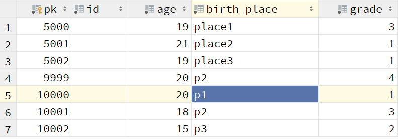

Quick Start¶
Configuration database¶
To use aiomyorm, first configure the database information.
The best way to configure it is to add a config.py file to your project directory, as shown in the following figure.

Then create a dict named aiomyorm in config.py, which contains your database related configuration, such as:
aiomyorm = {
'maxsize': 3,
'user': 'root',
'password': '123456',
'db': 'test',
'engine': 'mysql'
}
more configuration option see set_config
You can use the set_config_model() method to specify a specific Python file as the config file.
If you do not want to add an additional configuration file,
you can also use the set_config() method to configure manually:
set_config(engine='sqlite',
db='test.db')
Create Model¶
Like most ORM frameworks, you can create model classes to map your data tables.
class Test(Model):
__table__ = 'test'
pk = IntField(primary_key=True, default=auto_increment())
id = StringField(50)
age = IntField()
birth_place = StringField(50, default='china')
grade = SmallIntField()
more field see field
You can also specify the __auto__ property to be True. This model will automatically query
all fields from the corresponding tables in the database and map them to itself.
class All_Field(Model):
__table__ = 'all_field'
__auto__ = True
Warning
__auto__ not support sqlite.
Create Table¶
aiomyorm allows you to create database tables directly using the framework without relying on other database management tools.
asyncio.get_event_loop().run_until_complete(Test.create_table())
Insert data¶
Inserting data with aiomyorm is simple. You only need to create a instance and call save() method.
async def go_save():
await Test(pk=9999, age=20).save()
loop = asyncio.get_event_loop()
loop.run_until_complete(go_save())
loop.run_until_complete(close_db_connection())
All unassigned fields will be set to the default value of this Field.
If you want to insert more than one piece of data at a time, you need to call the insert() method.
async def go_insert():
r = await Test.insert(Test(pk=5000, age=19, birth_place='place1'),
Test(pk=5001, age=21, birth_place='place2'),
Test(pk=5002, age=19, birth_place='place3'))
assert r == 3
loop = asyncio.get_event_loop()
loop.run_until_complete(go_insert())
loop.run_until_complete(close_db_connection())
Note
insert() is a classmethod while save() is not.
Query from database¶
General query¶
aiomyorm provides three ways to execute queries: find(),``pk_find()`` and find_first().
The most common query method is find() and pk_find().
Note
find(), pk_find() and find_first() are all classmethod.
query all¶
find() will execute the query based on your restrictions and return all query objects in a list,
by default, he will query the entire table:
async def go_find():
r = await Test.find()
import pprint
pprint.pprint(r)
loop = asyncio.get_event_loop()
loop.run_until_complete(go_find())
loop.run_until_complete(close_db_connection())
results:
[<Test: {pk:5000, id:, age:19, birth_place:place1, grade:0}>,
<Test: {pk:5001, id:, age:21, birth_place:place2, grade:0}>,
<Test: {pk:5002, id:, age:19, birth_place:place3, grade:0}>,
<Test: {pk:9999, id:, age:20, birth_place:china, grade:0}>]
filter results¶
You can use query() method to restrict the fields of the query and filter from the table using filter() method.
async def go_filter():
r = await Test.query('pk', 'age').filter(age=19).find()
import pprint
pprint.pprint(r)
loop = asyncio.get_event_loop()
loop.run_until_complete(go_filter())
loop.run_until_complete(close_db_connection())
results:
[<Test: {pk:5000, age:19}>, <Test: {pk:5002, age:19}>]
filter() will use equal as the filter condition. If you want to filter more flexibly, use flex_filter().
async def go_flex_filter():
r = await Test.query('pk', 'age').flex_filter(Test.age > 19).find()
import pprint
pprint.pprint(r)
loop = asyncio.get_event_loop()
loop.run_until_complete(go_flex_filter())
loop.run_until_complete(close_db_connection())
results:
[<Test: {pk:5001, age:21}>, <Test: {pk:9999, age:20}>]
The flex_filter() can also filter data objects according to <, = or start_with,
see flex_filter()
Warning
If you have used methods such as filter() to restrict query results,
do not use await to surrender control until you execute the query
method(find() find_first() and so on):
# This is an example of a mistake
async def go_filter():
Test.query('pk', 'age')
await other_task()
r = await Test.find()
change database¶
Sometimes your data is stored in different databases. You can use
change_db_one_time() or
change_db() to switch databases:
async def go_change_db():
r = await Test.change_db_one_time('test2').find()
The difference between change_db() and change_db_one_time() is that change_db() will
permanently change the database of this model, And change_db_one_time() will only change in this query.
find_first() and pk_find()¶
Both two methods will directly return a data object,
in which pk_find() is based on the value of the primary key, and find_first()
is based on the filter criteria, and the first matching object is returned.
pk_find:
async def go_pk_find():
r = await Test.pk_find(5000)
print(r)
print(isinstance(r, Test))
loop = asyncio.get_event_loop()
loop.run_until_complete(go_pk_find())
loop.run_until_complete(close_db_connection())
results:
pk:5000, id:, age:19, birth_place:place1, grade:0
True
find_first:
async def go_find_first():
r = await Test.flex_filter(Test.pk>5000).find_first()
print(r)
print(isinstance(r, Test))
loop = asyncio.get_event_loop()
loop.run_until_complete(go_find_first())
loop.run_until_complete(close_db_connection())
results:
pk:5001, id:, age:21, birth_place:place2, grade:0
True
Note
What is the different between find_first() and limit() ?
Test.find_first() will return the first object in table while
Test.limit(1).find() will return a list, although there is only one object in the list.
Aggregate query¶
aiomyorm allows you to easily perform aggregate queries:
async def go_aggregate():
r = await Test.aggregate(Count('age'), maxage=Max('age'))
import pprint
pprint.pprint(r)
loop = asyncio.get_event_loop()
loop.run_until_complete(go_aggregate())
loop.run_until_complete(close_db_connection())
results:
{'COUNT__age': 4, 'maxage': 21}
or execute group aggregation query:
async def go_group():
r = await Test.aggregate(Count('age'), maxage=Max('age'), group_by='age')
import pprint
pprint.pprint(r)
loop = asyncio.get_event_loop()
loop.run_until_complete(go_group())
loop.run_until_complete(close_db_connection())
results:
{19: {'COUNT__age': 2, 'maxage': 19},
20: {'COUNT__age': 1, 'maxage': 20},
21: {'COUNT__age': 1, 'maxage': 21}}
aiomyorm provides the following five aggregate functions:
Max(), Min(), Count(), Avg(), Sum()
more information see aggregate()
Delete from database¶
aiomyorm provides two methods to delete data from the database: delete() and remove()
remove()¶
remove() is used to delete the object from the table:
async def go_remove():
t = await Test.pk_find(5000)
await t.remove()
loop = asyncio.get_event_loop()
loop.run_until_complete(go_remove())
loop.run_until_complete(close_db_connection())
delete()¶
delete() is used for batch deletion. It can accept filter and other filter criteria
and return the number of deleted rows.
async def go_delete():
r = await Test.flex_filter(Test.age>=20).delete()
print(r)
loop = asyncio.get_event_loop()
loop.run_until_complete(go_delete())
loop.run_until_complete(close_db_connection())
results:
2
Note
delete() is a classmethod while remove() is not.
Update data¶
Similar to delete, aiomyorm provides two methods to perform update:save() and update()
save()¶
save() can be used not only to create data, but also to modify data:
async def go_save_update():
await Test(pk=3333, id='old_data', age=20).save()
r = await Test.pk_find(3333)
print('old data: ', r)
r.id = 'new data'
r.age = 10
await r.save()
r_new = await Test.pk_find(3333)
print('new data: ', r_new)
loop = asyncio.get_event_loop()
loop.run_until_complete(go_save_update())
loop.run_until_complete(close_db_connection())
results:
old data: pk:3333, id:old_data, age:20, birth_place:china, grade:0
new data: pk:3333, id:new data, age:10, birth_place:china, grade:0
update()¶
update() is used to perform batch changes, which is similar to delete():
async def go_update():
r = await Test.find()
import pprint
print('old values:')
pprint.pprint(r)
rows = await Test.filter(grade=0).update(age=18)
r = await Test.find()
print('update affect %d rows, new value is:' % rows)
pprint.pprint(r)
loop = asyncio.get_event_loop()
loop.run_until_complete(go_update())
loop.run_until_complete(close_db_connection())
results:
old values:
[<Test: {pk:3333, id:new data, age:10, birth_place:china, grade:0}>,
<Test: {pk:5002, id:, age:19, birth_place:place3, grade:0}>,
<Test: {pk:10000, id: , age:21, birth_place:place4, grade:2}>,
<Test: {pk:10001, id: , age:26, birth_place:place5, grade:1}>]
update affect 2 rows, new value is:
[<Test: {pk:3333, id:new data, age:18, birth_place:china, grade:0}>,
<Test: {pk:5002, id:, age:18, birth_place:place3, grade:0}>,
<Test: {pk:10000, id: , age:21, birth_place:place4, grade:2}>,
<Test: {pk:10001, id: , age:26, birth_place:place5, grade:1}>]
Note
update() is a classmethod while save() is not.
Complex SQL¶
Using ORM framework does not support complex queries very well, so sometimes you need to execute custom SQL statements.
The next example is shown in the following table:
use model.select¶
async def go_select_1():
rs = await Test.select('SELECT * FROM test WHERE age>(SELECT age FROM test WHERE pk=5002)')
for r in rs:
assert isinstance(r, Test)
import pprint
pprint.pprint(rs)
loop = asyncio.get_event_loop()
loop.run_until_complete(go_select_1())
loop.run_until_complete(close_db_connection())
results:
[<Test: {pk:5001, id:, age:21, birth_place:place2, grade:1}>,
<Test: {pk:9999, id:, age:20, birth_place:p2, grade:4}>,
<Test: {pk:10000, id: , age:20, birth_place:p1, grade:1}>]
use basic select()¶
from aiomyorm import select
async def go_select_2():
rs = await select('SELECT * FROM test WHERE age>(SELECT age FROM test WHERE pk=5002)')
print(type(rs[0]))
import pprint
pprint.pprint(rs)
loop = asyncio.get_event_loop()
loop.run_until_complete(go_select_2())
loop.run_until_complete(close_db_connection())
results:
<class 'dict'>
[{'age': 21, 'birth_place': 'place2', 'grade': 1, 'id': '', 'pk': 5001},
{'age': 20, 'birth_place': 'p2', 'grade': 4, 'id': '', 'pk': 9999},
{'age': 20, 'birth_place': 'p1', 'grade': 1, 'id': ' ', 'pk': 10000}]
Note
What’s the difference between Model.select() and select() ?
They will all return a list containing query results. The difference is that each item
in the list returned by select() is a dict, while Model.select() is a Model object.
execute insert, update and delete¶
To do a custom insert, update or delete, you can use either execute()
or Model.execute(), which have the same performance and will return the
number of rows affected.
async def go_execute():
rs = await execute('UPDATE test set id="little boy" WHERE age>(SELECT age FROM test WHERE pk=5002)')
print(rs)
loop = asyncio.get_event_loop()
loop.run_until_complete(go_execute())
loop.run_until_complete(close_db_connection())
results:
3
Thanks for reading!